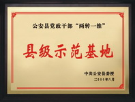
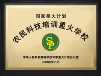

企业文化
荆州市金秋农业高新技术有限公司位于荆州市长江大桥南岸江南新区，是一个由农业科技人员二次创业组建、深圳市金派实业有限公司投资控股的民营科技企业。 荆州市金秋农业高新技术有限公司以“服务农业、服务农村、服务农民”为理念，诚信为本，贴近农民。把设施农业、生态农业、效益农业、绿色环保和观光旅游结合在一起，引进、示范、研究、推、普及、应用农业新品种、新技术、新模式。走公司、基地＋农户联产业，科研、教学（培训）、生产、营销综合发展的路，促进农民增收，推动社会主义新农村建设又好又快发展。
荆州市金秋农业高新技术有限公司现有农业科技研发基地100亩，示范基地2000亩，生产基地15000亩。引种、示范、生产高效经济作物品种20多个系列100多个品种，年创产值1.5亿元； 金秋农民科技培训星火学校年培训能力3000人；金秋技术物质配送中心直接受益面积5万多亩。
葡萄是公司的主导产业，有栽培品种30多个，开展项目研究10多项，创新技术20多个。“反季葡萄优质、高效栽培技术研究”是公司总经理刘军承担的具有自主知识产权的湖北省科技攻关项目。
项目以“双向调控”、“双禁栽培”、“温差管理”技术为创新点，配套系列园艺措施，使葡萄提前休眠，提早发芽、开花、结果。成熟期提早50多天，品质提高1～2个百分点，亩产值2万元以上。
该项目2004年通过湖北省科技厅组织的成果鉴定，获湖北省重大科技成果。2005年该项目进入中试示范，获准国家科技部、财政部农业科技成果转化资金项目支持。
湖北省科技厅列入“星火富民工程”、湖北省科协列入“金桥工程”项目实施。
葡萄是公司的主导产业，有栽培品种30多个，开展项目研究10多项，创新技术20多个。“反季葡萄优质、高效栽培技术研究”是公司总经理刘军承担的具有自主知识产权的湖北省科技攻关项目。
项目以“双向调控”、“双禁栽培”、“温差管理”技术为创新点，配套系列园艺措施，使葡萄提前休眠，提早发芽、开花、结果。成熟期提早50多天，品质提高1～2个百分点，亩产值2万元以上。
该项目2004年通过湖北省科技厅组织的成果鉴定，获湖北省重大科技成果。2005年该项目进入中试示范，获准国家科技部、财政部农业科技成果转化资金项目支持。
湖北省科技厅列入“星火富民工程”、湖北省科协列入“金桥工程”项目实施。
荣誉证书
-  公安县党政干部“两转一推”县级示范基地
-  国家星火计划农村科技培训星火学校
 湖北省农业厅湖北省科协颁湖北农业科技创新五十强企业
湖北省农业厅湖北省科协颁湖北农业科技创新五十强企业
- 湖北省科技扶贫先进单位
 湖北省科技厅颁湖北省星火富民工作先进集体
湖北省科技厅颁湖北省星火富民工作先进集体
- 湖北省科技厅颁星火示范企业
- 湖北省农业厅湖北省科协颁湖北农业科技创新五十强企业
- 荆州市科协科普示范基地
- 荆州市农村党员电化教育培训基地
- 全省乡镇党委“两转一推”活动示范服务基地
- 中共湖北省委组织部颁全省“双建双带”活动示范基地
- 中共湖北省委组织部颁全省乡镇党委“两转一推”活动示范服务基地
- 中共科协 财务部颁全国科普惠农兴村先进单位
- 荆州市科协科普示范基地